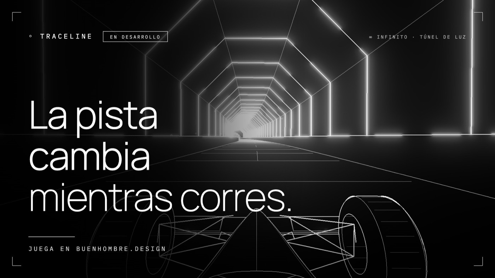
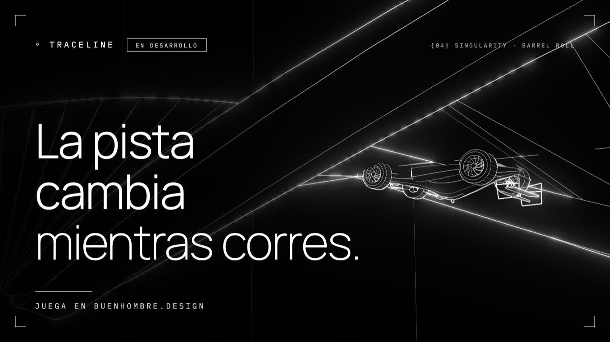
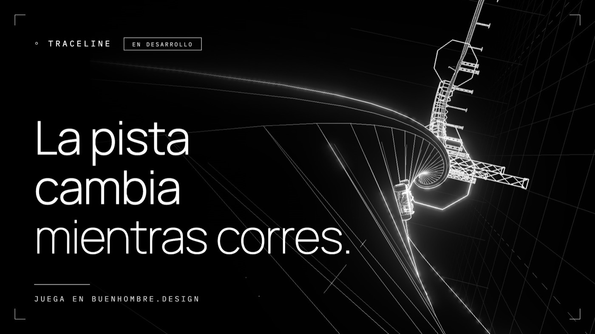
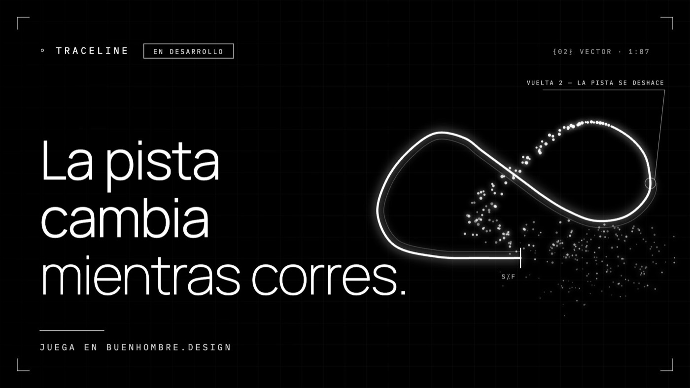
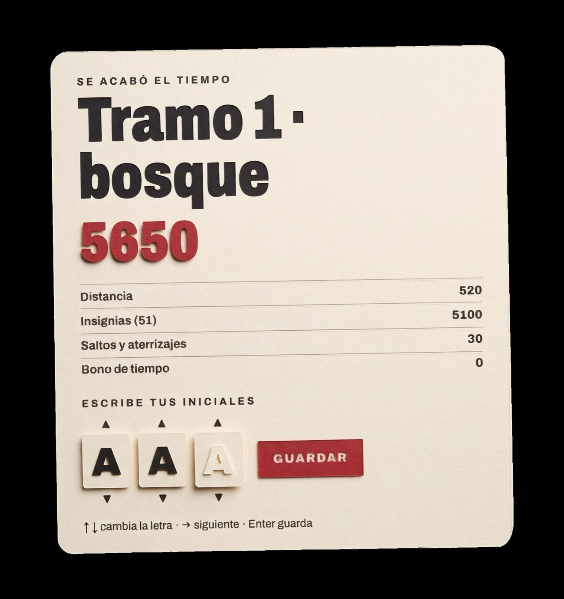
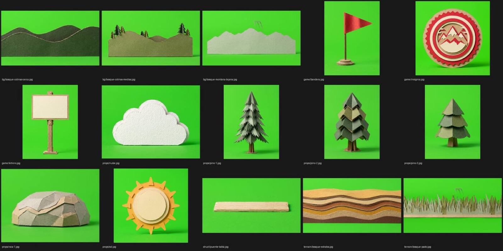

Juegos de marca.
Juegos que corren en el navegador: se abren con un link o un QR, sin descargar nada. Estos son los nuestros. Juégalos y piensa cómo se vería el tuyo.
- Formato
- Web, celular y pantalla de evento
- Se abre con
- Un link o un QR
- Incluye
- Ranking, sonido y tu marca en todo el juego
- Para
- Campañas, eventos y activaciones
DRIFTWAY
Una nave, cinco sectores, una regla: no pares.
- Cómo se juega
- Esquivas obstáculos en 3D a toda velocidad; el turbo multiplica el puntaje y en el último sector también dispara.
- Controles
- Mouse o flechas en computador; arrastrar y dos o tres dedos en el celular.
- Hecho con
- Three.js en un solo archivo: carga rápido, sin servidor.
- Para tu marca
- Tu nave, tus colores y tus mensajes en cada sector, con ranking para la campaña.
TRACELINE
Carreras a escala 1:87 dibujadas como un plano técnico: líneas que brillan, túneles de luz y tramos cabeza abajo.
- Cómo se juega
- Contrarreloj de 3 vueltas con fantasma y medallas, o modo infinito: la pista se genera en vivo y nunca se repite.
- Lo propio
- TRAZO: el camino se construye con tu línea. Lo que no trazas se vuelve barrera; las figuras que cierras te dan poderes.
- Circuitos
- Pistas que se transforman entre vueltas: la elevada se derrumba y la carrera baja a la ciudad.




PAPER TRAIL
Un juego de manejo 4x4 en papel recortado, pensado para el stand de una marca automotriz.
- Cómo se juega
- Partidas de 2 a 3 minutos con dos botones: acelerar y frenar. Banderas que suman tiempo, saltos a la cornisa y llegada a la cumbre.
- En el evento
- Modo atracción en pantalla, ranking con iniciales y vuelta sola al inicio para que la fila avance.
- Sin disparos
- Todo el reto es la habilidad de quien maneja y del 4x4.

